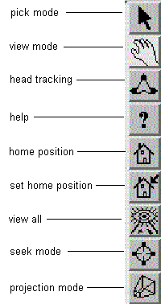

| Tool Bar and Wheels (plus Menu Bar ind Information Area) will disappear if you set 'Decoration off' in the Viewer Popup Menu (menu Covise Renderer) |
| It may be necessary to resize the Renderer window in order to see the complete Tool Bar including the projection mode icon. |
With the Tool Bar you can perform
the following functions (see icons below):
|  |
(PickMode) (ViewMode) currently not supported general help: IV Renderer specific help for toolbar / wheels see this window position/orientation (HomePosition / SetHomePosition) (ViewAll and SeekMode) |
In addition to the
mouse
operations in view mode you can move your scene via three thumb wheels.